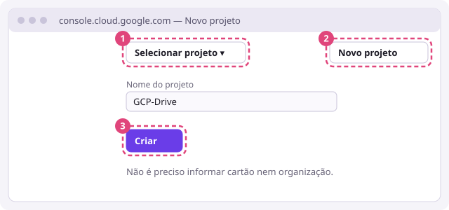
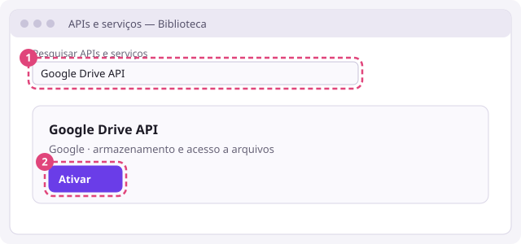
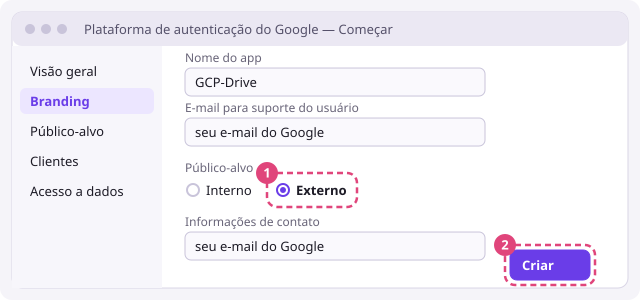
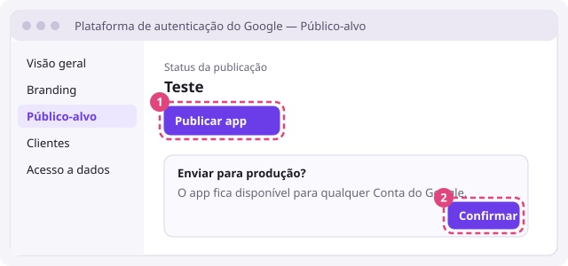
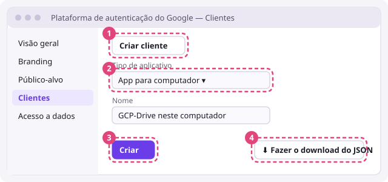
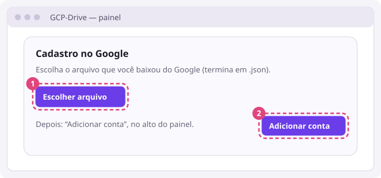
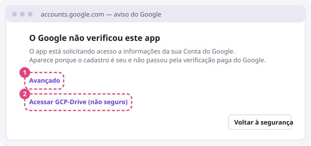
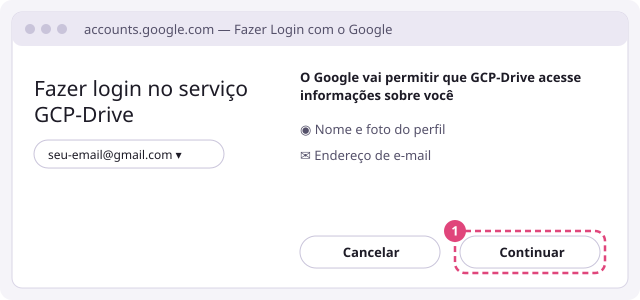
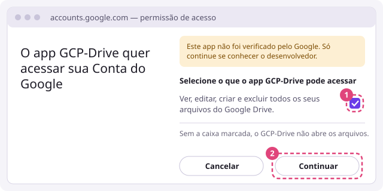

Para entrar na sua conta, o Google exige que todo aplicativo tenha um cadastro. O GCP-Drive não traz um cadastro pronto: você cria o seu, na sua própria Conta do Google, e ele fica só com você. O GCP-Drive não envia esse arquivo nem os seus dados para lugar nenhum além do Google.
As figuras são desenhos simplificados das telas do Google; as cores e a posição dos botões podem variar um pouco.
1. Crie um projeto
Abra o console do Google Cloud e entre com a sua Conta do Google. No alto da página, clique em Selecionar projeto, depois em Novo projeto. Dê o nome GCP-Drive e clique em Criar. Espere alguns segundos e escolha o projeto criado.

2. Ative o Google Drive nesse projeto
Na página da Google Drive API, confira se o projeto GCP-Drive aparece no alto e clique em Ativar.

3. Preencha os dados do aplicativo
Na Plataforma de autenticação do Google, clique em Começar. Em Nome do app escreva GCP-Drive, escolha o seu e-mail como suporte, em Público-alvo marque Externo, informe o seu e-mail de contato, aceite a política e clique em Criar.

4. Publique o aplicativo
No menu Público-alvo, clique em Publicar app e confirme. Sem este passo o Google desconecta a conta a cada 7 dias. Não é preciso pedir a verificação ao Google.

5. Crie o cliente e baixe o arquivo
No menu Clientes, clique em Criar cliente. Em Tipo de aplicativo escolha App para computador, dê um nome qualquer e clique em Criar. Na janela que aparece, clique em Fazer o download do JSON. O arquivo vai para a sua pasta Downloads, com um nome que começa com client_secret.

6. Entregue o arquivo ao GCP-Drive
Volte ao painel do GCP-Drive. No quadro Cadastro no Google, clique em Escolher arquivo e selecione o arquivo baixado. Depois clique em Adicionar conta.

7. No primeiro login, passe pelo aviso do Google
Ao adicionar uma conta, o navegador abre a página do Google. Escolha a conta e aparece “O Google não verificou este app”. É esperado: o cadastro é seu e não passou pela verificação do Google, que é um processo pago voltado a empresas. Se o link vermelho não estiver à vista, clique em Avançado; depois clique em Acessar GCP-Drive (não seguro). O desenvolvedor citado no aviso é o e-mail de quem criou o cadastro, ou seja, o seu.

8. Confirme a conta
Na tela Fazer login no serviço GCP-Drive, confira o e-mail e clique em Continuar.

9. Marque o acesso ao Drive e continue
Na última tela, marque a caixa ao lado de “Ver, editar, criar e excluir todos os seus arquivos do Google Drive” e clique em Continuar. Se a caixa ficar desmarcada, a conta entra mas o GCP-Drive não consegue abrir os arquivos. O navegador mostra “Conta conectada” e a pasta da conta aparece no painel.

Cada cadastro não verificado aceita até 100 Contas do Google. Guarde o arquivo baixado: ele identifica o seu cadastro e não deve ser publicado.